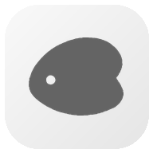
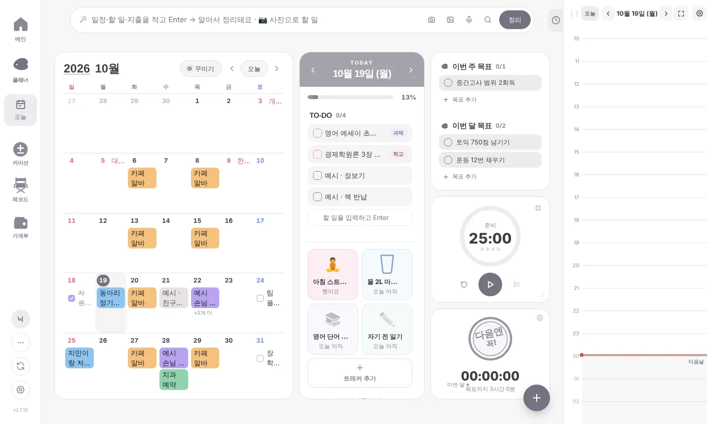
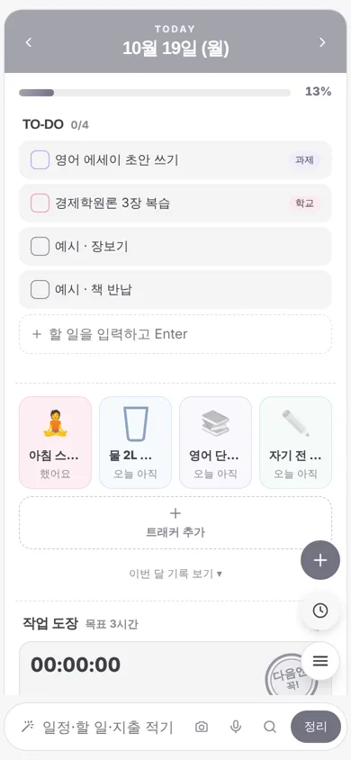

Daterbase
다꾸러, 커미션주, 덕질러, 일상 관리가 필요한 사람까지.
모두를 위한 올인원 프로그램.


할 수 있는 것
📅 플래너
달력 · 오늘 할 일 · 습관 트래커 · 타이머, 스티커와 메모로 꾸미기
🎨 커미션
신청 접수부터 마감 · 입금 · 완성작 · 답장 템플릿까지
🎞 레코드
본 것 · 한 것을 갤러리 · 책 · 스레드로 기록
💰 가계부
수입 · 지출과 한 달 예산
🕒 구글 캘린더 (PC 프로그램)
허락한 경우에만 내 구글 캘린더 일정을 타임테이블에 보여 주고, 앱에서 만든 일정을 내 캘린더에 반영해요.
🔒 내 데이터는 내 기기에
개발자 서버가 없어요. 데이터는 내 기기, 또는 내가 직접 만든 Supabase 프로젝트에만 저장돼요.
About Daterbase (English)
Daterbase is a personal, non-commercial productivity app that combines a decorated planner (calendar, to-dos, habit tracker, timer), commission (art request) management, a record journal (gallery, books, threads) and a budget book in one place. It runs as a web app and as a desktop app for Windows.
How Daterbase uses Google user data: Only after the user clicks "Connect Google account" in the desktop app and grants access, Daterbase uses the Google Calendar API to show the user's calendar events in the app's timetable, and to create, update or delete events that the user makes in Daterbase on the user's own Google Calendar (two-way sync). Calendar data and sign-in tokens are stored only on the user's own device. They are never sent to the developer or any third party, and are not used for advertising or analytics.
The developer operates no servers. All app data is stored on the user's device or in a Supabase project owned by the user.